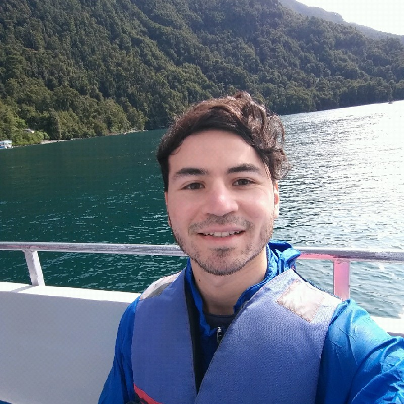

Sobre GeoStyle / About GeoStyle
Español
English below
GeoStyle es una consultora ambiental originaria de Chile, la cual ofrece consultorías privadas de diversos tipos y cursos/capacitaciones online.
Las principales áreas de GeoStyle son:
- Teledetección
- SIG
- Ecología del paisaje
- Estadística
Principales softwares / plataformas utilizados:
R
Google Earth Engine
Python
QGIS
Como utilizamos lenguajes de programación en la mayoría de nuestros servicios, realizamos procesos de forma rápida y reproducible.
Fundador GeoStyle:

Andrés Salazar, Magíster en Recursos Naturales e Ingeniero Agrónomo. Ambos grados estudiados en la Pontificia Universidad Católica de Chile. Principales temas de interés: Ecología del paisaje, Modelos de Distribución de Especies (SDM), Cambio de uso y cobertura de suelo, modelos predictivos de Machine Learning, entre otros. Actualmente realiza investigaciones y consultorías en el área de los recursos naturales. Ha colaborado en proyectos de Asia, Brasil, Perú, México, la Patagonia chilena, la zona central de Chile, entre otros.
Mail contacto: ajsalazar@uc.cl
English
GeoStyle is an environmental consulting company from Chile, which offers private consulting of various types and online courses/trainings..
The main areas of GeoStyle are:
- Remote sensing
- GIS
- Landscape Ecology
- Statistics
Main softwares / platformas used:
R
Google Earth Engine
Python
QGIS
As we use programming languages in most of our services, we perform processes in a fast and reproducible way.
GeoStyle Founder:
Andrés Salazar, Master in Natural Resources and Agronomist Engineer. Both degrees studied at the Pontificia Universidad Católica de Chile. Main topics of interest: Landscape ecology, Species Distribution Modeling (SDM), land use and land cover change, Machine Learning predictive models, among others. He is currently conducting research and consulting in the area of natural resources. He has collaborated in projects in Asia, Brazil, Peru, Mexico, Chilean Patagonia, central Chile, among others.
Mail: ajsalazar@uc.cl